on-demand, isolated, browser-accessible development & learning environments
persistent storage · multi-tenant network isolation · zero local setup
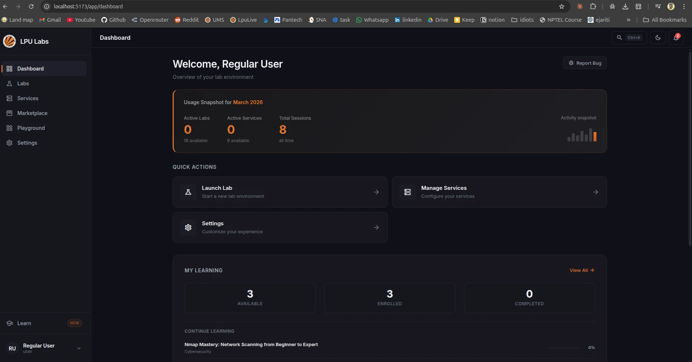
lpu labs dashboard — main interface
what is lpu labs?
lpu labs is a platform-as-a-service (paas) layer above docker, abstracting container complexity into a web-based interface. users authenticate via oauth2 or email/password, then provision pre-configured lab environments — ubuntu desktop, kali linux, devops toolchains, data science stacks — or database services through a react frontend.
the platform enforces isolation at the network layer — each user receives a dedicated docker network, preventing cross-user traffic. persistent volumes ensure data survives container restarts.
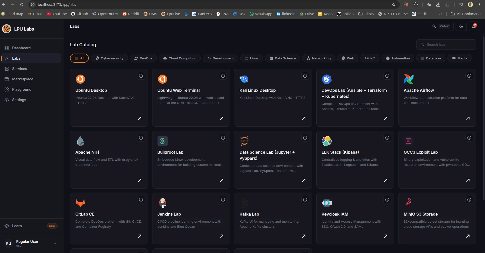
lab environment selection — choose from 20+ pre-built environments
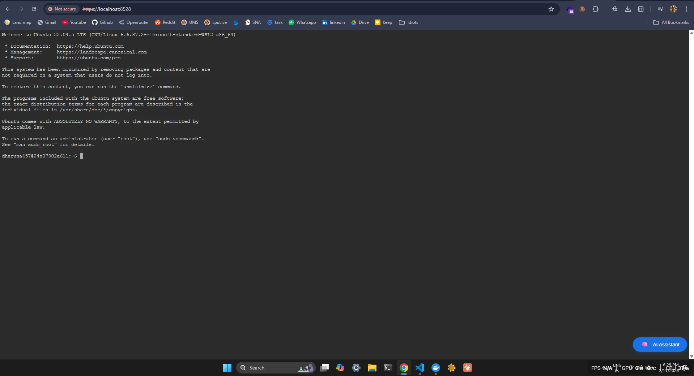
browser-based access via kasmvnc / code-server — no local install needed
how it works
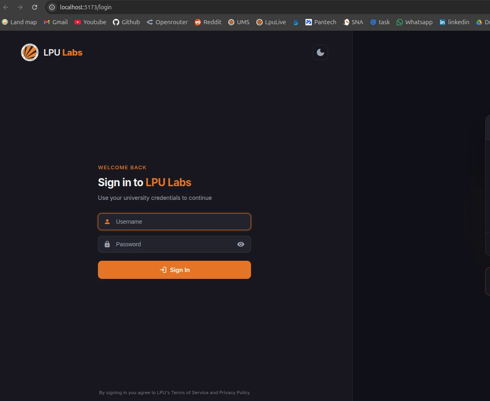
Login page to platform
core features
container orchestration
docker sdk integration, lifecycle management, image building patterns, resource limits (cpu/memory)
network isolation
user-specific overlay networks, multi-tenant segmentation, bridge networking — zero cross-user traffic
persistent storage
docker volumes per user, bind mounts, data retention across container lifecycles and restarts
browser-based access
kasmvnc for full desktop environments, code-server for vs code — nothing to install locally
auth & security
oauth2 (google/github), jwt with refresh tokens, rate limiting, session management
auto-cleanup
background schedulers (apscheduler) handle idle container termination, resource cleanup, health checks
real-time updates
websocket connections for live notifications, container status broadcasts, resource monitoring
observability
prometheus metrics integration, structured logging with rotation, usage tracking, audit trails
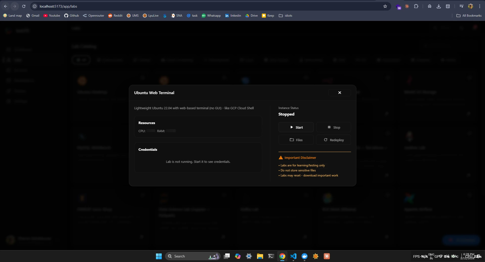
container management — start, stop, monitor running environments
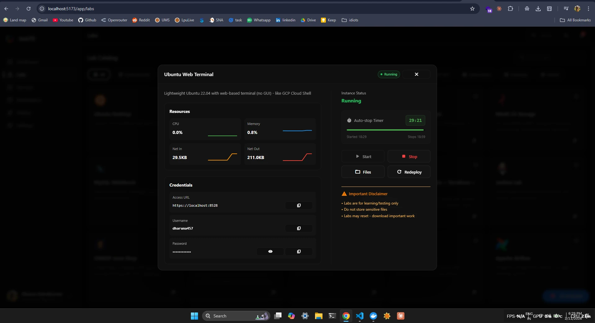
resource monitoring — cpu, memory, network usage per container
20+ pre-built environments
lpu labs ships with ready-to-use environments covering development, cybersecurity, data science, and devops:
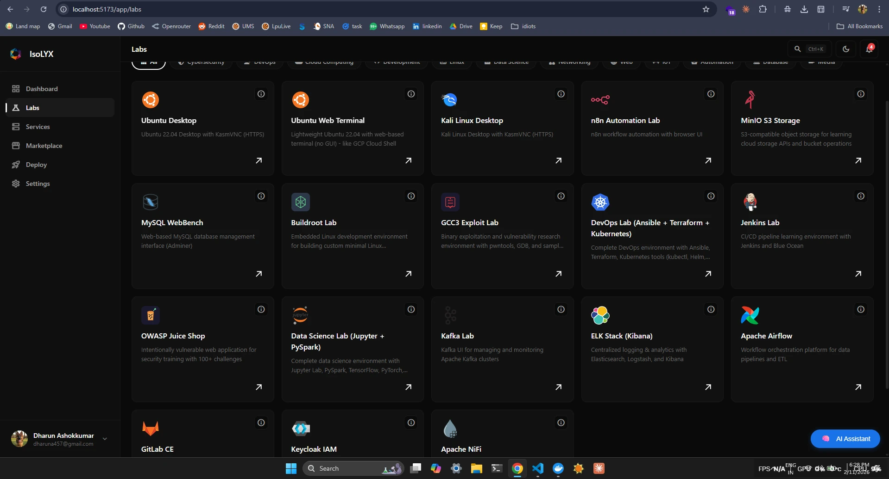
lab catalog — ubuntu desktop, kali linux, jupyter notebooks, jenkins, gitlab, ansible, terraform, and more
ubuntu server — browser-based terminal access
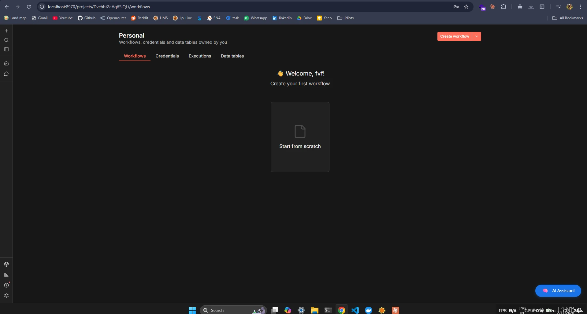
n8n — automation workflows
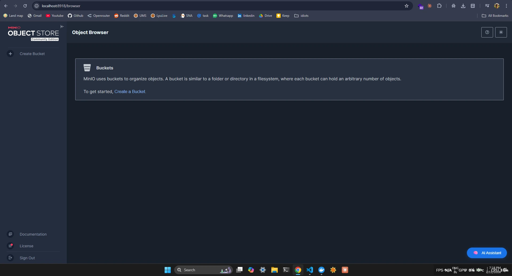
minio — object storage service
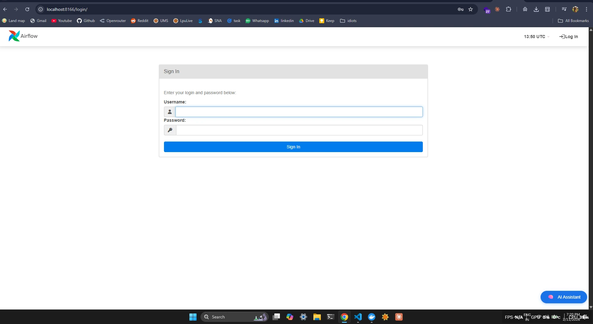
Apache Airflow — workflow automation and scheduling
technology stack
built with production-grade patterns — async architecture, restful api design, jwt auth, rate limiting, structured logging, and separation of concerns (controllers → services → core modules).
project scope
lpu labs spans multiple engineering domains — demonstrating real-world application of cloud computing, educational technology, devops automation, cybersecurity training infrastructure, and distributed systems architecture.
the platform serves practical use cases in cybersecurity training, software development education, and computer science labs — while exhibiting advanced concepts in network engineering, async web architecture, and multi-tenant resource management.
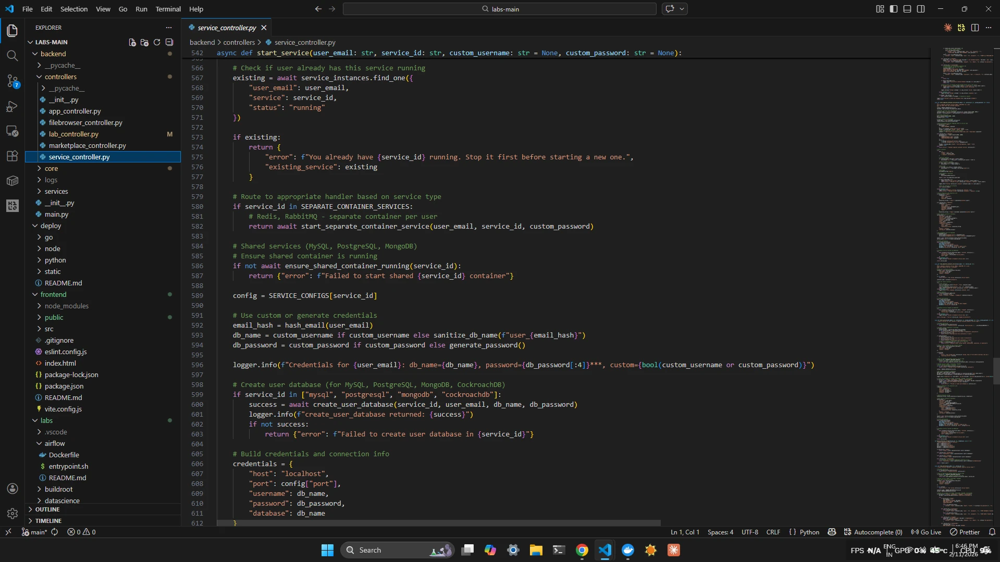
lpu labs backend service implementation — controller and orchestration logic
built by dharun ashokkumar